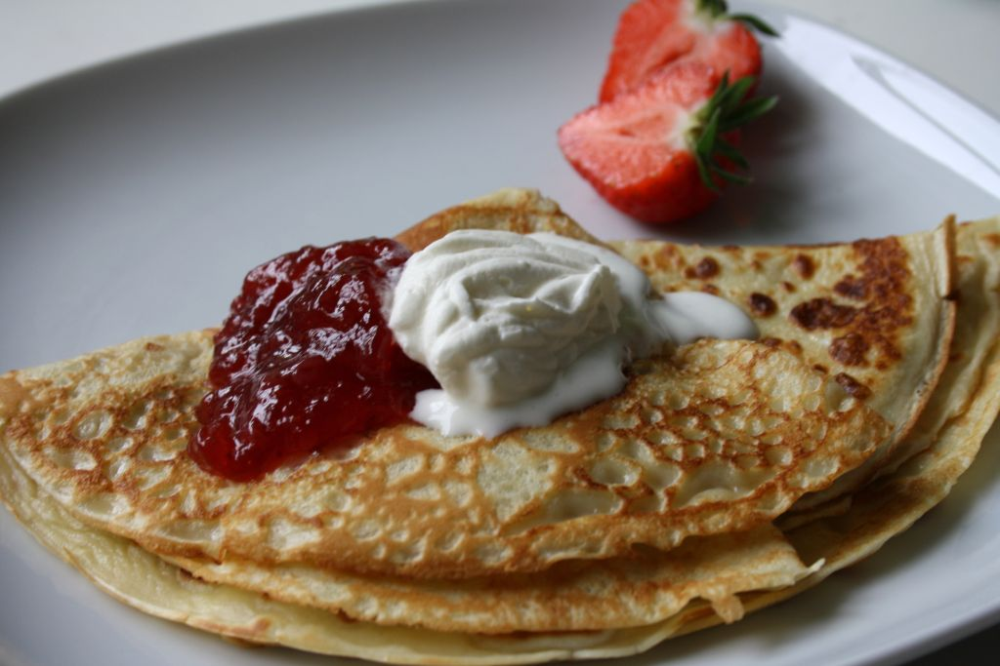

HomeCalendar
Pancakes Recipe
THE INGREDIENTS
- 2 eggs
- 1 3/4 cup milk
- 1 teaspoon vanilla essence
- 2 cups self-raising floor
- 1/3 cup CSR Caster Sugar
- Butter, for frying, plus extra, to serve
- Maple syrup, to serve
THE METHOD
Step 1
Whisk eggs, milk and vanilla together in a jug. Sift flour into a large bowl. Stir in sugar. Make a well in the centre. Add milk mixture. Whisk until just combined.
Step 2
Heat a large non-stick frying pan over medium heat. Grease pan with butter or spray with cooking oil. Using 1/4 cup mixture per pancake, cook 2 pancakes for 2 minutes or until bubbles appear on surface. Turn and cook for a further 1-2 minutes or until cooked through. Transfer to a plate. Cover loosely with foil to keep warm. Repeat with remaining mixture, greasing pan with butter or cooking oil between batches.
Step 3
Serve with maple syrup and extra butter.
